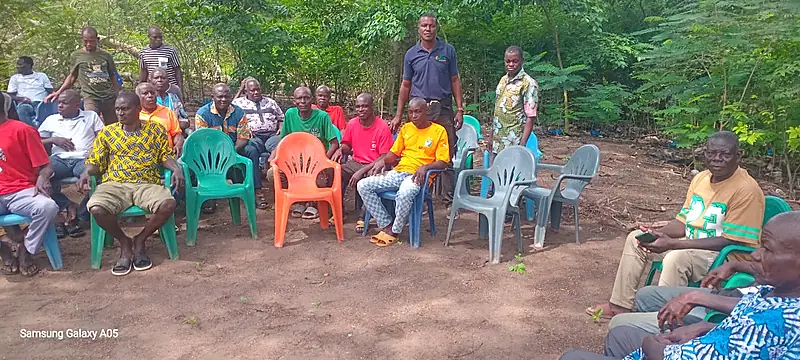
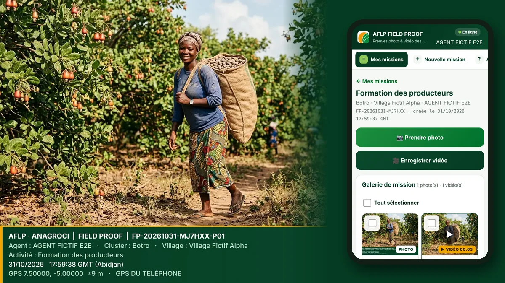
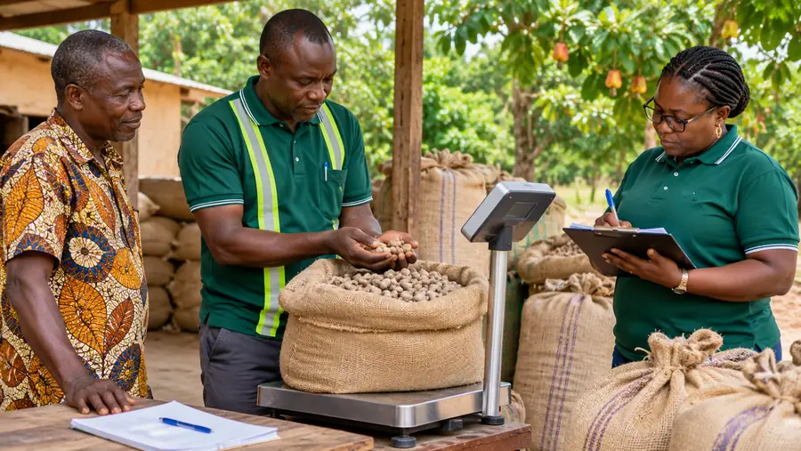
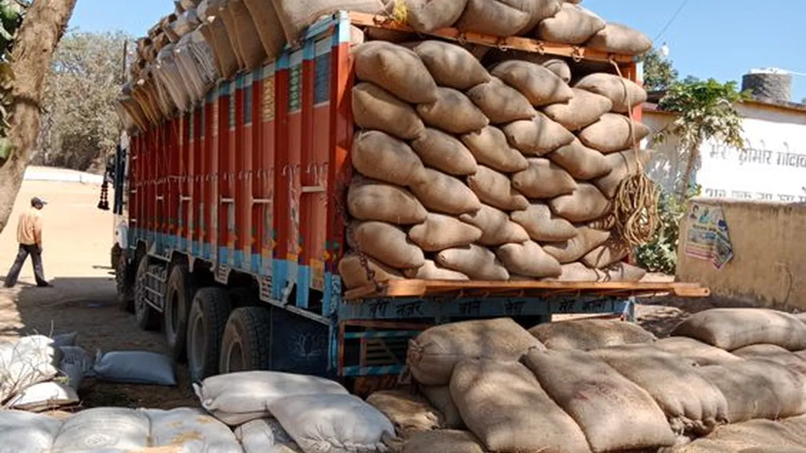

Ma journée
Votre travail bord champ, en accès direct. Retrouvez les producteurs, les activités terrain et les achats sans quitter la navigation FBMS.
Les espaces de travail
Des raccourcis illustrés vers les fonctions existantes, sans portail intermédiaire.
Espace 01Ma journéeMissions, tâches et accès rapides.Voir mes actions

Espace 02RéseauProducteurs, RT, villages et coopératives.Ouvrir les producteurs
Espace 03TerrainVisites, formations et durabilité.Ouvrir le terrain
Espace 04Achats & comptes RTAchats RCN, avances, stock et sacs.Ouvrir les achats
Espace 05ExpéditionLots, chargements et départs du village.Ouvrir les expéditions Espace 06Pilotage & administrationTableaux de bord, rapports et campagnes.Ouvrir le pilotageAccès rapides
Un clic vers la fonction, sans deuxième menu.
Les photos illustrent les espaces. Les mouvements réels, soldes et validations restent dans les modules existants, soumis aux autorisations serveur.